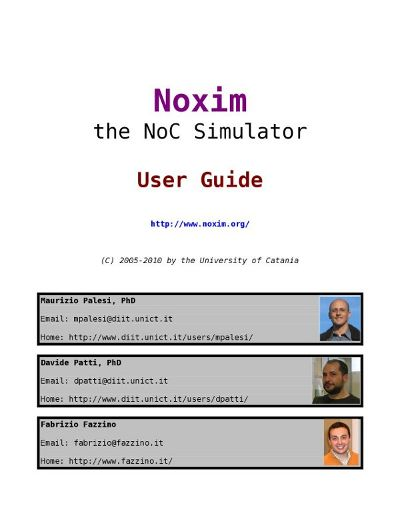

Welcome to Noxim, the Network-on-Chip Simulator developed at the University of Catania (Italy).
The Noxim simulator is developed using SystemC, a system description language based on C++, and
it can be downloaded from SourceForge under GPL license terms.
Noxim has a command line interface for defining several parameters of a NoC. In particular the
user can customize the network size, buffer size, packet size distribution, routing algorithm,
selection strategy, packet injection rate, traffic time distribution, traffic pattern, hot-spot
traffic distribution.
The simulator allows NoC evaluation in terms of throughput, delay and power consumption. This
information is delivered to the user both in terms of average and per-communication results.
In detail, the user is allowed to collect different evaluation metrics including the total number
of received packets/flits, global average throughput, max/min global delay, total energy consumption,
per-communications delay/throughput/energy etc.
The Noxim simulator is shipped along with Noxim Explorer, a tool useful during the design space
exploration phase. Infact, Noxim Explorer executes many simulations using Noxim in order to explore
the design space, and modifying the configuration parameters for each simulation. Noxim Explorer will
create new configuration parameters for you, or complete the exploration according to the information
read from a script (known as exploration script or space file).
Download
You can download the latest version of Noxim from

User Guide
If you have downloaded Noxim, you'll find a copy of the Noxim User Guide in the "doc" subdirectory.
Otherwise, you can access it directly from

References
Search for academic Noxim papers and articles on
© 2005-2010 by the University of Catania